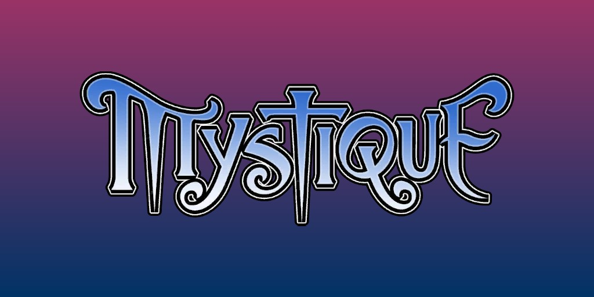
Mystique (Raven Darkhölme) (Terre-616)
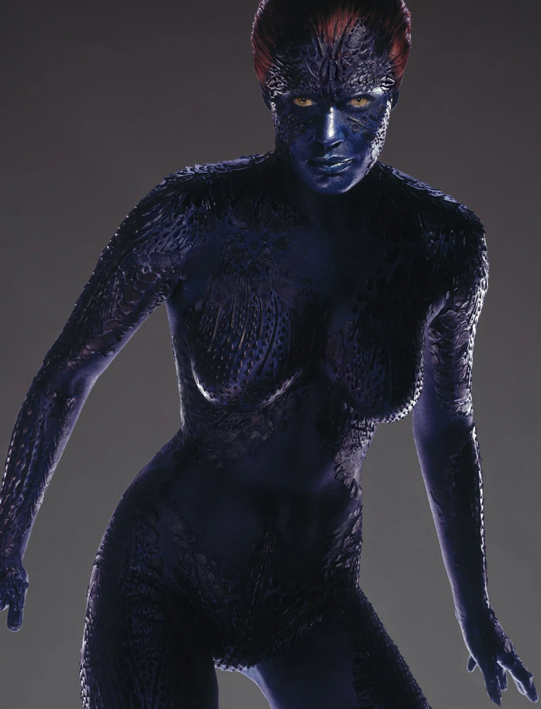
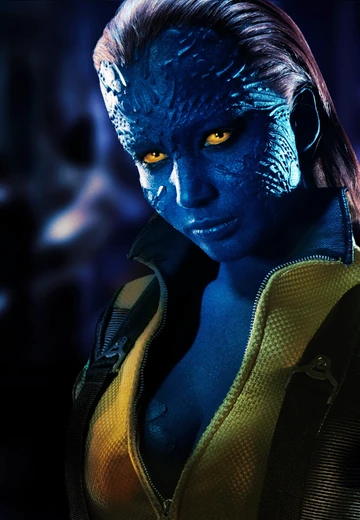
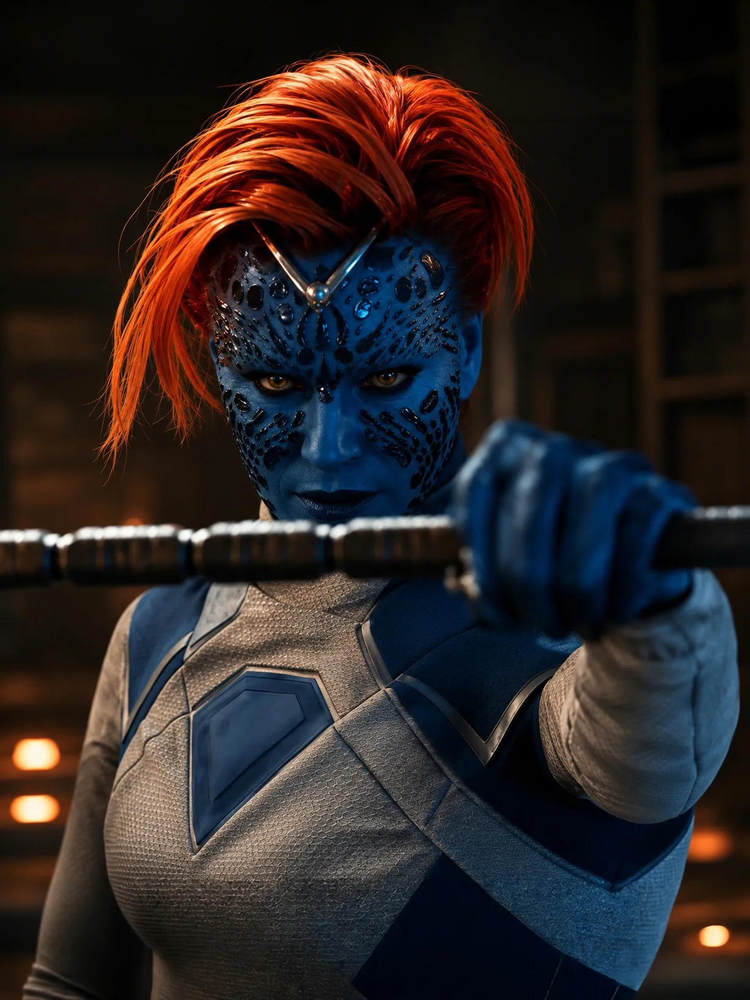
Origines :
On ne connaît que peu de choses sur la jeunesse de Mystique, ses pouvoirs mutants lui conférant une longévité bien supérieur à celle d'un humain normal.
On sait simplement que ses pouvoirs se sont manifestés pour la première fois lorsqu'elle avait douze ans, et qu'elle a dû se « battre pour survivre ».
Vers la fin du XIXe siècle, elle fit la rencontre de la mutante autrichienne Irene Adler, dotée de pouvoirs de précognition.
Cette dernière, durant son adolescence, avait rédigé treize volumes de prophéties relatives à la fin du XXe et au début du XXIe siècle sur une période de douze mois, suite à quoi elle serait devenue aveugle et hantée par des visions troublantes au sens incertain.
Sous le nom de Eric Raven, Mystique sollicita les services d'Irene pour atteindre deux objectifs : déchiffrer ses prophéties et empêcher la réalisation de la plus terrifiante d'entre-elles.
Les deux femmes devinrent rapidement amies puis amantes, mais découvrirent que leurs objectifs seraient difficiles à atteindre.
Vers 1895, Raven adopta l'identité du détective Sherlock Holmes et exerça à Londres, en collaboration avec sa partenaire.
Toutes les deux étaient amies avec l'écrivain Sir Arthur Conan Doyle, qui consigna leurs aventures dans ses notes avant de les adapter dans ses célèbres romans.
Elles furent engagées pour enquêter sur plusieurs meurtres inspirés par Jack l'Éventreur.
Elles enquêtèrent à Millbury House, la demeure du Dr Nathaniel Essex, retrouvé nu et battu sur les lieux mais sans aucun souvenir de l'agression.
Cette nuit-là, Raven se fit passer pour une prostituée dans l'espoir d'attirer l'agresseur, et trouvèrent Mr. Sinistre, qui s'enfuit par les toits.
Elles le suivirent jusqu'au domicile du Dr Essex et le surprirent à reprendre l'apparence du docteur.
Elles l'arrêtèrent donc et l'envoyèrent à l'hôpital Bedlam pour y être interné et soigné, mais apprirent qu'il avait été assassiné dans la nuit.
En 1921, Raven se retrouva sur le point d'être exécutée par un peloton d'exécution dans le désert de Sonora, au Mexique.
Sa peau bleue avait fait croire aux habitants du village qu'elle était une sorcière.
Alors qu'elle avait les yeux bandés et attachée au poteau, elle remarqua un homme ligoté à côté d'elle.
Elle parvint à se détacher de justesse et assista à l'exécution de l'homme, criblé de balles.
Cependant, ce dernier survécut et parvint à tuer les gardes grâce à d'étranges griffes sortant de ses mains.
Après leur évasion, surprise de le voir encore en vie, Raven lui demanda où il comptait aller à présent, et l'homme lui répondit simplement : « Au bar le plus proche ».
Raven se présenta à l'homme, qui dit s'appeler Logan, puis lui dit qu'elle avait un groupe d'amis à Kansas City qu'il serait sûrement ravi de rencontrer.
Durant la Seconde Guerre Mondiale, Raven et Irène rencontrèrent Rachel Summers et Shadowcat qui avaient voyagé dans le temps depuis le futur et cherchaient à empêcher un complot des agents nazis Wolfgang Von Strucker et Ghost, et de leur allié Amahl Farouk, le Roi d'Ombres.
Irène et Raven contactèrent leur vieille connaissance Logan pour obtenir l'aide des voyageurs temporels.
Elles déconseillèrent à Shadowcat et Logan de poursuivre leur projet d'assassinat d'Adolf Hitler et d'autres dirigeants importants du parti nazi.
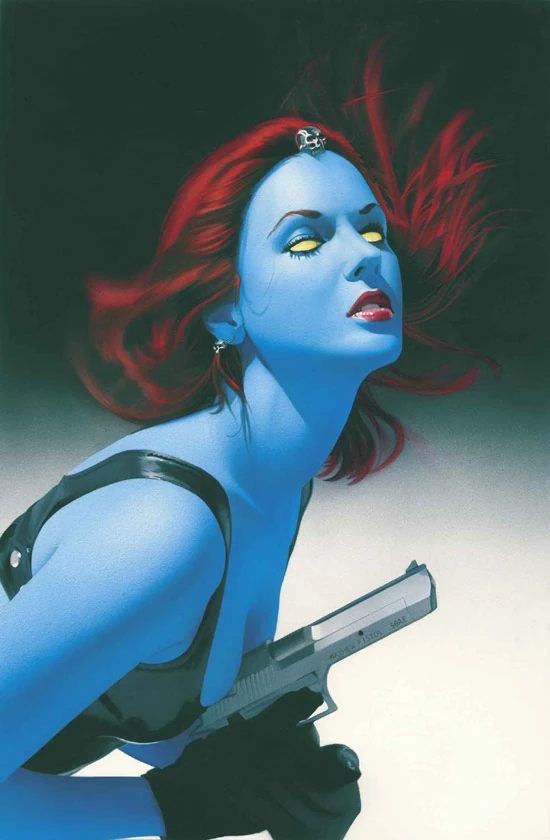
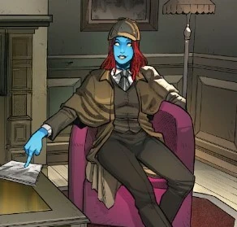


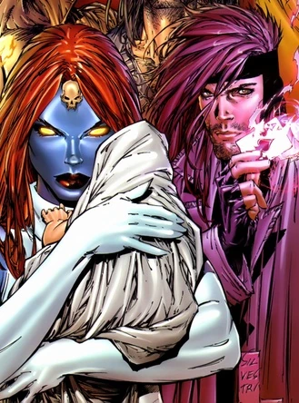
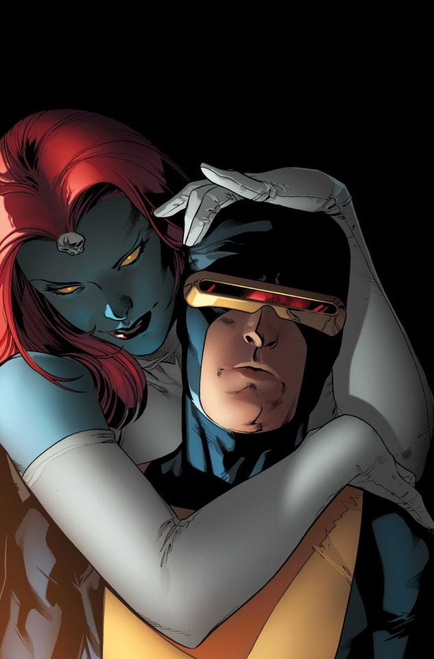
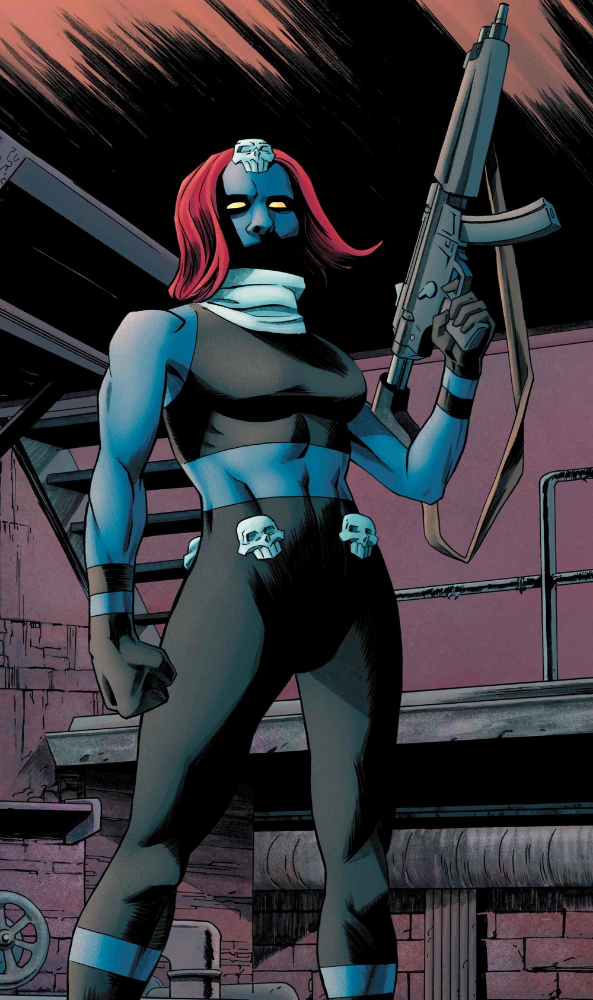
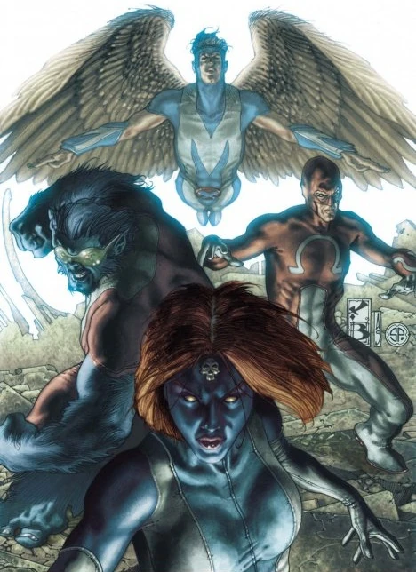
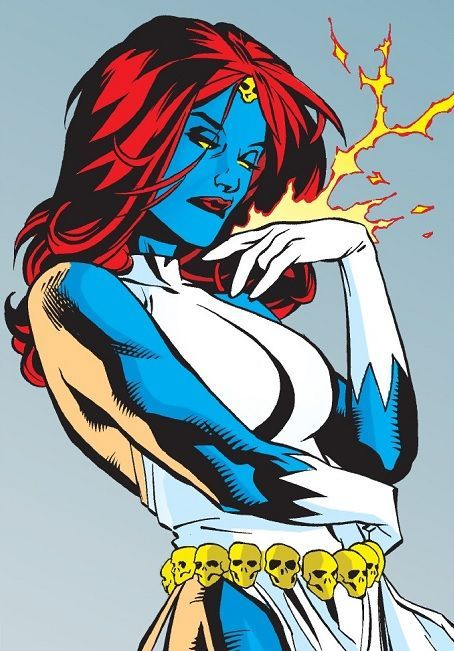
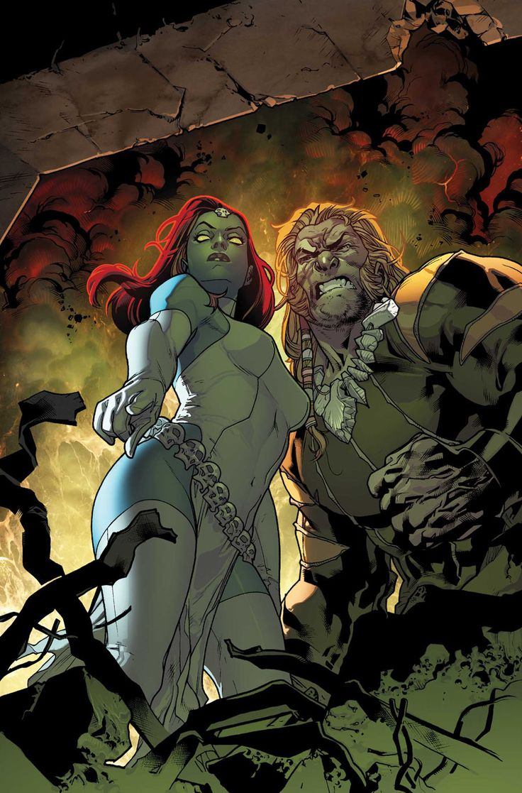

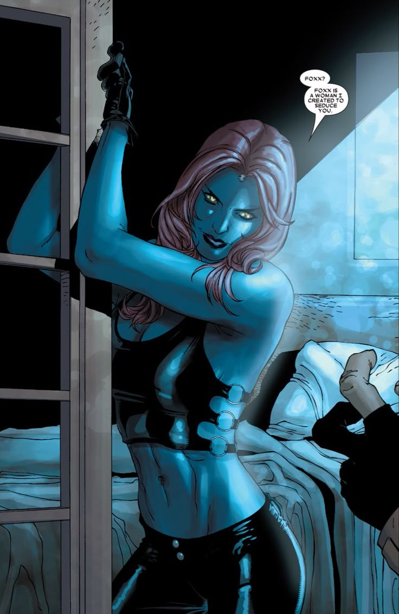
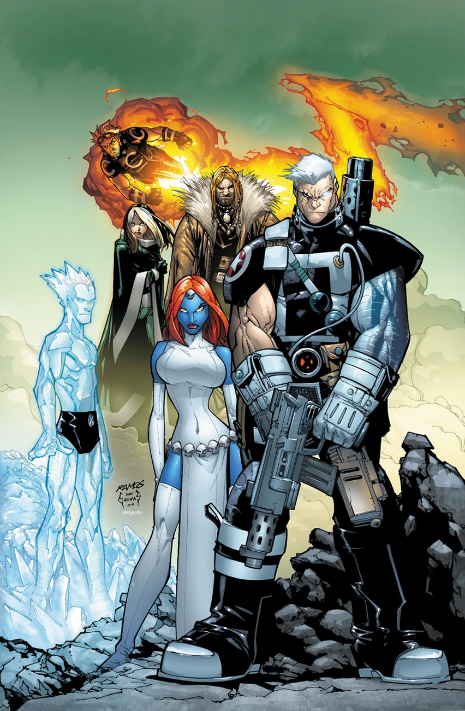
Capacités :
Mystique est une mutante métamorphe, capable de modifier psioniquement sa propre structure cellulaire afin de changer d'apparence.
Cela lui permet d'endosser l'apparence de n'importe qui, que ce soit un mutant ou un humain.
Elle est également capable de copier les vêtements et des accessoires, comme des lunettes ou des chapeaux, qui sont des extensions de son corps.
En complément de ses capacités mutantes, Mystique est une adepte en arts-martiaux et une experte en technologie informatique.

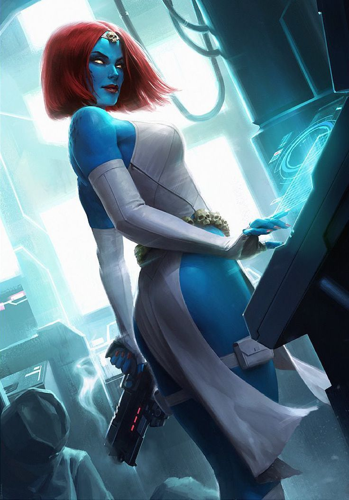
Apparence :
Sous sa véritable apparence, Mystique possède une peau bleue qui, en fonction des artistes, peut être parcourue de légères nuances écailleuses ou texturées.
Généralement, ses yeux sont jaunes avec des pupilles fendues, lui donnant une allure presque reptilienne.
Ses cheveux sont souvent roux flamboyants, coiffés en arrière ou tombant en une coupe courte et sauvage.
Son costume classique est une combinaison moulante blanche à l'allure de robe, laissant ses bras, ses épaules et une partie de ses jambes visibles.
Elle porte également de longs gants blancs, des bottes hautes et une ceinture dorée ornée d'un crâne en son centre, et parfois un collier ou un diadème dorés assortis.
Équipes affiliées


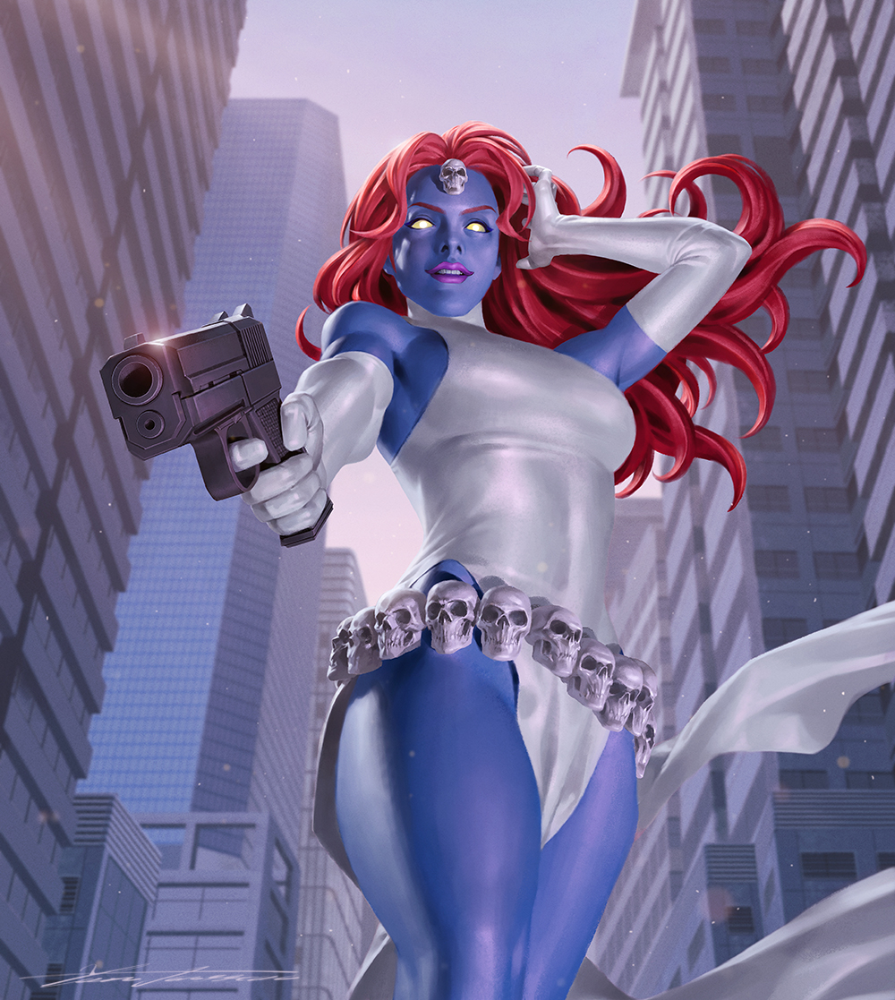
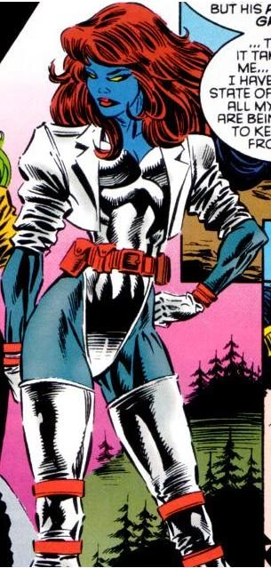
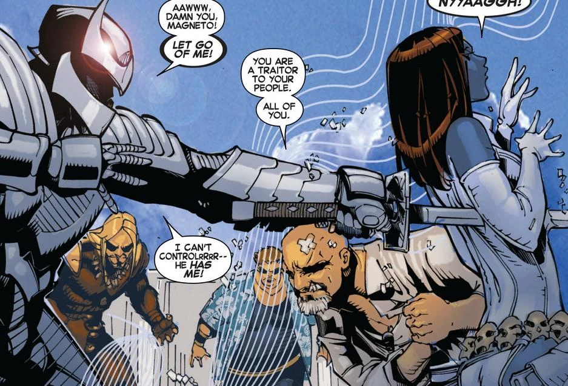
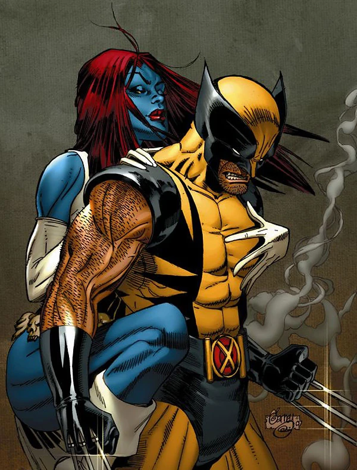